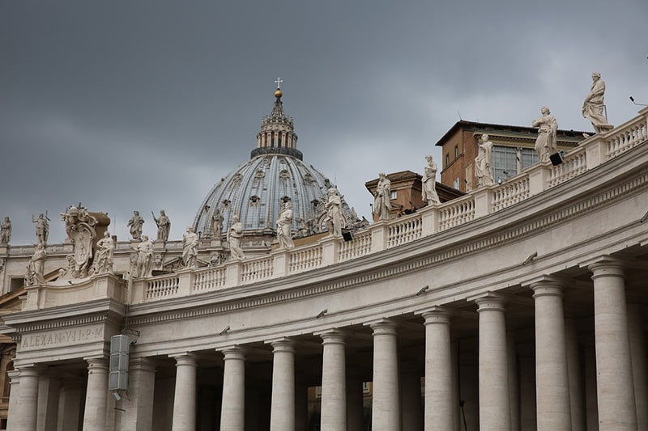

Se você está planejando uma viagem para Roma, já deve ter ouvido falar do Panteão, né? Esse é um daqueles lugares que todo mundo coloca na lista e, quando chega lá, entende o porquê. Com uma história que atravessa quase dois mil anos, o Panteão é um dos monumentos mais impressionantes e bem preservados da Roma Antiga. Mas o que faz ele ser tão especial?
O grande destaque do Panteão é a sua cúpula. Com 43,3 metros de diâmetro, ela é feita de concreto não reforçado, uma verdadeira façanha de engenharia para a época em que foi construída, lá pelo século II. No centro, há um óculo – um buraco redondo de 9 metros de diâmetro – que deixa a luz natural entrar e ilumina o interior do templo de uma maneira única. É um espetáculo simples, mas totalmente excelente, que mostra a genialidade dos arquitetos romanos em usar a luz para criar efeitos visuais.
Agora, o que mantém essa cúpula firme e forte por tanto tempo? O segredo está no concreto pozolânico, uma mistura de cinza vulcânica (pozzolana) com cal, que os romanos descobriram ser resistente à água e extremamente durável. Diferente do cimento Portland que usamos hoje, essa mistura permitia que o concreto endurecesse mesmo debaixo d'água. Graças a isso, o Panteão está de pé há quase dois mil anos, enfrentando tudo quanto é tipo de clima e condição.
Se você acha que só o Panteão impressiona, vale a pena conhecer também outras cúpulas que marcaram a história. A cúpula do Duomo de Florença, por exemplo, foi uma revolução no seu tempo. Filippo Brunelleschi, o arquiteto responsável, enfrentou o desafio de construir uma cúpula gigantesca sem usar andaimes que tocassem o chão, algo inédito na época. Ele inventou técnicas inovadoras, como um sistema de rampas e guinchos, e usou um padrão especial de assentamento dos tijolos para garantir a estabilidade da estrutura.
Já na Basílica de São Pedro, em Roma, o jogo foi um pouco diferente. Michelangelo e seus sucessores tiveram que usar andaimes e estruturas de suporte tradicionais, mas também aplicaram soluções inovadoras, como sistemas de polias e guinchos avançados. A cúpula de São Pedro é um símbolo da arquitetura renascentista e, embora tenha enfrentado desafios parecidos com os de Florença, foi construída com técnicas e recursos da época que permitiram uma abordagem mais tradicional.
Então, o que faz o Panteão ser tão especial? Além de sua engenharia impressionante e resistência ao tempo, ele tem uma simplicidade e uma elegância que continuam a atrair visitantes do mundo todo. É um lugar onde você pode sentir a grandiosidade da Roma Antiga e, ao mesmo tempo, perceber como eles eram mestres em construir coisas para durar. Se você está pensando em visitar Roma, não deixe o Panteão de fora. Ele é um pedacinho da história, bem no coração da cidade, que vale cada minuto da sua visita.
Pronto para se encantar com essa maravilha? Aposto que o Panteão vai te surpreender.